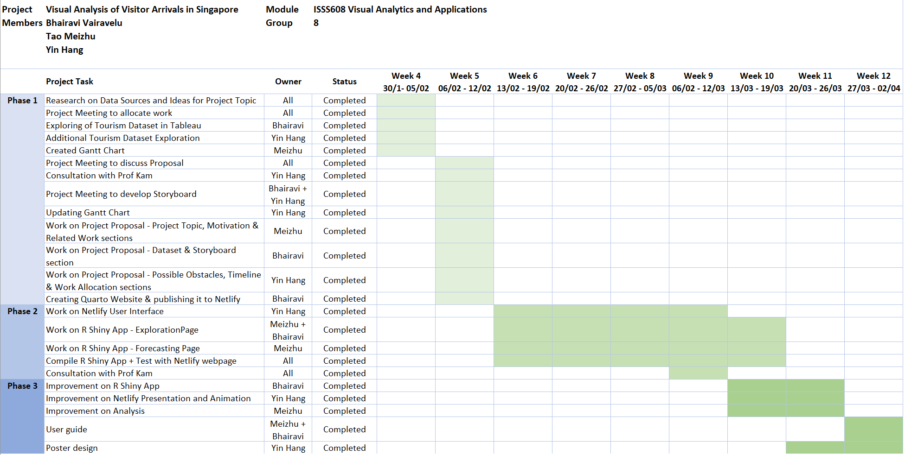

Project Proposal
This page contains our project proposal.
1. Overview
In this project, our team, Group 10, will be building a web-enabled visual analytics platform using R Shiny application. The aim of this project is to provide key insights using the data we have gathered and cleansed, allowing the user to draw meaningful conclusions from our visualizations.
2. Project Topic
The tourism sector in Singapore has been impacted by the COVID-19 pandemic significantly, leading to a decline in tourist arrivals and a shift in travel patterns. “A sustainable tourism is something that is becoming increasingly important in the next 10 years”, said Mr. Christopher Khoo, the managing director for international tourism consultancy Master Consult Services. An important question to address is how to better understand the challenges the tourism industry face so that we can implement specific measures when planning and managing tourism in Singapore. Without such measures, Singapore’s tourism could face numerous negative impacts that may affect their sustainability and competitiveness on the global market, such as the impact by COVID-19, increased traffic congestion, and conflicts between visitors and hosts (hotels).
Our aim is to visualize and analyse historical data and provide a predictive model with accuracy, which will help the tourism sector and stakeholders to draw insights easily, take actions quickly and gain advantages in terms of sustainability and competitiveness in a very competitive global tourism industry when the world just sprung back into a more vibrant sector.
3. Motivation
Tourism industry plays a significant part in the economy of Singapore, contributing to employment, foreign exchange earnings as well as overall economic growth. However, the number of international tourist arrivals in Singapore dropped sharply with the onset of the COVID-19 pandemic. The number gradually bounced back in 2022. Despite the significant annual increase, international tourism arrivals in Singapore remained below pre-pandemic levels, totaling at approximately 63 million in 2022. It became critical on how to forecast the number of tourists based on the given historical time-series data and multiple factors.
In this project, we will visualize and analyse the International Visitor Arrivals by Inbound Tourism Markets dataset, and build an interactive R Shiny application for forecasting of the next 10 years. Singapore tourism sectors can draw insights and take actions based on the insights they gain from the R Shiny application and the Quarto website that we are developing.
5. Dataset
The dataset that will be used for this project is from: https://www.singstat.gov.sg/

Once downloaded, this single Excel file contains the following sheets: Content, T1, T2 and T3. The sheet Content basically describes the information that is captured in the different sheets in the Excel file.
The following is a snapshot of the sheet T1, which contains information about the monthly international visitor arrivals grouped by the inbound tourism market.

In this sheet, we have the following information:
The data series column captures
The total international visitor arrivals
The regions and countries the visitors arrived from
The remaining columns represent the month and year of the data
The following is a snapshot of the sheet T2, which contains information about the monthly international visitor arrivals grouped by their gender and age group.
In this sheet, we have the following information:
The data series column captures
The total international visitor arrivals
The gender of the visitors
The age group of the visitors
The remaining columns represent the month and year of the data
The following is a snapshot of the sheet T3, which contains information about the monthly international visitor arrivals grouped by their length of stay.

In this sheet, we have the following information:
The data series column captures
The total international visitor arrivals
The length of stay of the visitors
The average length of stay of the visitors
The remaining columns represent the month and year of the data
6. Possible Approach
The dataset will be cleansed, processed, and transformed into a suitable format for visual analysis. This analysis will be performed using various R packages. The analysis will mainly focus on the following aspects:
- Key insights into visitor arrivals in Singapore such as where they are from, their gender, age group and their length of stay in Singapore
- Trends in visitor arrivals in Singapore, before and after the COVID-19 pandemic.
- Forecasting of visitor arrivals for the next 1 to 10 years
The results of the visual analysis will be presented in the form of interactive charts in a R Shiny application. The insights generated will be useful for stakeholders in the tourism and hotel industries, as well as policymakers and researchers, in understanding the trends and challenges facing the tourism sector in Singapore.
7. Storyboard
Our R Shiny application is titled “Visitor Arrival Analysis”. This application contains three sections – Home, Explore and Forecast.
Home Page
The following is the storyboard for the Home Page, which also serves as a summary page.

In this home page, the following summary level information will be captured:
Text label to display the total visitor arrivals
Text label to display the country most of the visitors are from
Text label to display the age range most of the visitor fall into
Text label to display the average number of days visitors stayed
These text labels aim to provide quick insights into the visitor arrivals in Singapore. Moreover, these labels will be affected by the following filters:
Slider to control the range of years of data, built using the sliderInput()
Multi-select checkbox to control the quarters of data, built using the checkboxGroupInput()
Multi-select dropdown box to control the months of data, built using the selectInput()
This home page will also contain a time series line chart to depict the number of visitors across time. This will be built using the tidyverse package (ggplot2) in R, utilizing the geom function of geom_line().
This chart will be controlled by the Metrics filter which controls the metric that is displayed in the line chart. The metrics in this filter are “By Region”, “By Country”, “By Gender”, “By Age Group” and “By Length of Stay”. This filter will be a single-select dropdown box that is built using the selectInput().
A submit button, built using actionButton(), is included in this page to allow users to click and refresh the home page to reflect their filter selections.
The key thing to note for this page is that the metrics filter will only affect the time series line chart. Moreover, this metrics will represent the colour codes in the line chart. Therefore, we have included a section on the right to display the legends based on the metrics chosen by the user.
Explore Page
The following is the storyboard for the Explore Page. This page will contain a total of 4 tabs – By Geography, By Gender, By Age Group and By Length of Stay.
By Geography
The storyboard below is an example of how the By Geography tab will be built.

In this explore page, the following filters will be provided to users:
Slider to control the range of years of data, built using the sliderInput()
Multi-select checkbox to control the quarters of data, built using the checkboxGroupInput()
Multi-select dropdown box to control the months of data, built using the selectInput()
This page will also contain the following charts:
Tree map to depict the number of visitors by region, built using the treemap package in R
Bar chart to depict the number of visitors by country, built using the tidyverse package (ggplot2) in R, utilizing the geom function of geom_bar()
In this explore page, users can click on a cell in the tree map to filter the bars displayed in the bar chart. For example, if the user were to click on the cell representing the region of Europe, the bars will be filtered to only display countries which are in the region of Europe, such as France and Belgium.
A mock up designed using Tableau is shown below:
A submit button, built using actionButton(), will also be included in this page to allow users to click and refresh the explore page to reflect their filter selections.
By Gender
The storyboard below is another example of how the Explore Page will be built. This storyboard focuses on what elements the By Gender tab will contain.
In this explore page, the following filters will be provided to users:
Slider to control the range of years of data, built using the sliderInput()
Multi-select checkbox to control the quarters of data, built using the checkboxGroupInput()
Multi-select dropdown box to control the months of data, built using the selectInput()
This page will also contain the following charts:
Pie chart to depict the number of visitors by gender across time, built using the tidyverse package (ggplot2) in R, utilizing the geom function of geom_bar() and coord_polar to make it circular to resemble a pie
- An alternative to this would be to use the pie() function that is natively provided in R
Stacked Bar chart to depict the number of visitors by gender for the selected period, built using the tidyverse package (ggplot2) in R, utilizing the geom function of geom_col() to show the proportion of data (percentage of total)
A mock up designed using Tableau is shown below:
A submit button, built using actionButton(), will also be included in this page to allow users to click and refresh the explore page to reflect their filter selections.
Forecast Page
The following is the storyboard for the Forecast Page.
This page is similar to the summary page, whereby we have the filters for the various data periods, as well as the filters to control the metrics we want to view in the time series line chart. With this metrics filter, the user can forecast the number of visitors based on their chosen metric.
In this forecast page, however, we modify the year filter. In the summary page, the user will be able to change the range of years they want to view the data for. On the other hand, in the forecast page, they will be given the option to forecast for the next 1 to 10 year range using the sliderInput().
When user clicks on the submit button, which is built using the actionButton(), users will be able to see an animation that depicts how the number of visitors are predicted to be for the next given number of years. This animation will be built using the gganimate package. Additionally, we will be utilizing the gifski package to convert the animated plot into a GIF format, and the transformr package to smoothly animate the lines in the time series plot.
To ease the interpretability of this page, we will also include a tabular view below the time series line chart to capture the number of visitors that are forecast for the next given number of years. This will be built using the DT package in R, which provides an interface to the DataTables library that is in JavaScript.
To summarize, the following R packages will be used in our project:
ggplot2
treemap
gganimate
gifski
transformr
DT
8. Possible Obstacles
One of the main obstacles that we are facing is that the dataset is 1 dimensional and cleansed. For instance, we will be unable to match a record of data to two categorical variables. One example is that we will be unable to determine how many visitors in the age group of 15 to 19 years old are male. Due to this limitation, our team is in the midst of requesting for the raw data files from Singapore Tourism Board.
As we are facing this obstacle, the team is also unable to determine the various analysis that could be done with the raw dataset. Due to not having the raw data and having aggregated data, we are unsure on the possibilities of building analytical visualizations such as scatterplots, boxplots and violin plots.
Due to this limitation, we intend to rework the storyboard once gaining access to the raw dataset.
However, keeping in mind that there is a possibility that we are not awarded with the raw dataset, the team has a secondary plan of utilizing additional datasets such as Tourism Receipts and Hotel Statistics to boost up the value of our visual analysis.
Another obstacle that the team might face is the data wrangling portion of this project. As described in the Dataset section, we have multiple categorical variables in a single column, such as Region and Country. Our team intends to wrangle and transform these variables into a clean and usable format before proceeding to create the various R visualizations. Due to an unfamiliarity with various R packages, the team sees this as an obstacle. However, with research of R documentations, practice of R code and exploration of the various packages, we are certain that we will overcome this.
9. Timeline & Work Allocation
The following is our Gantt chart for the project timeline:

The following is the Work Allocation between the project members:
Meizhu: Data Exploration and Forecast Model Building
Yin Hang: Netlify Presentation and Animation
Bhairavi: R Shiny App Building
This concludes the submission for Group 10’s Project Proposal. Thank you!